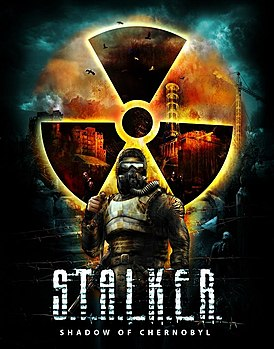
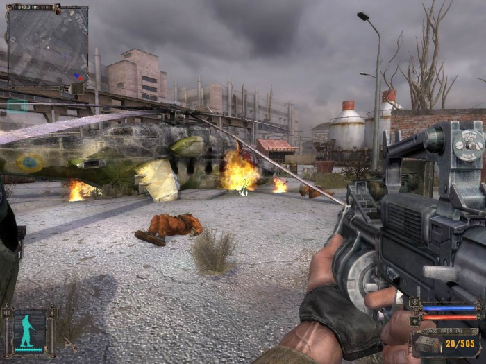
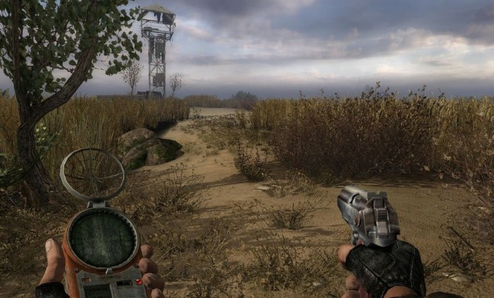
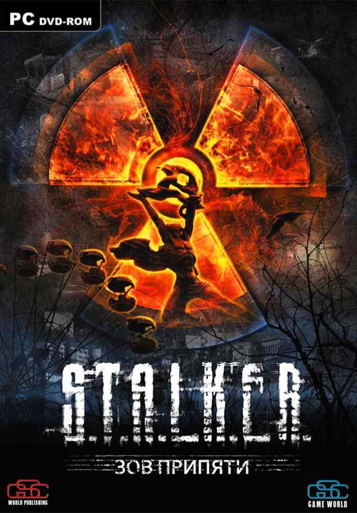
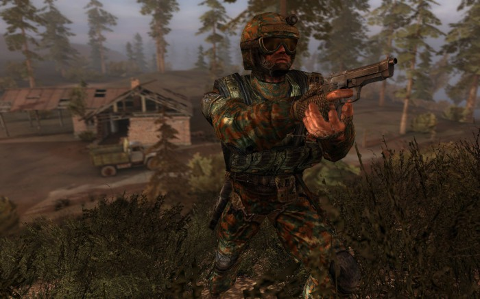

История трилогии S.T.A.L.K.E.R
S.T.A.L.K.E.R. – Тень чернобыля
«Сталкер – Великая отечественная игра!» © Игромания
Игра «Сталкер – Тени чернобыля», получила огромную известность еще до выхода в 2007, все таки студия Григоровича ранее работала над «Warcraft 2000» и легендарными «Казаками». Концепция игры предполагала симулятор выживания в той самой зоне. По задумке, сюжет должен был развиваться с нажатия кнопки «Новая игра» и обладая огромным уровнем интерактивности, мог вовсе обойтись без участия игрока. Полноценных РПГ элементов не планировалось, ставка делалась именно на интерактивность. С помощью ручного КПК, можно было связываться с другими сталкерами, предлагать обмен или торг. Но по известным, пожалуй лишь Богу причинам, больше половины контента, который так ждали поклонники еще не вышедшего «Oblivion lost». Начнем с сюжета. Игра рассказывает о неизвестном сталкере по кличке Меченый. В начале игры, в результате удара молнии, разбивается труповоз. Прибывший на место крушения одиночка, с удивлением обнаруживает что среди перевозимых трупов находился живой человек, которому посчастливилось выжить в катастрофе. Героя сразу доставляют к местному торговцу, где он приходит в чувства. Все что при нем есть – КПК с единственной записью, «Kill the strelok». Меченый считает что Стрелок виновен в том, что Меченый оказался в грузовике смерти и начинает поиски, по пути спасая чернобыль и возможно, мир от угрозы зоны. Сталкер, под номером 1, потерял большую часть того, за что игроки умудрились полюбить игру ни разу не поиграв в нее. Большинство локаций были вырезаны, а те что остались были отредактированы под более линейное прохождение. Были вырезаны детекторы радиации и аномалии, удалены с карт автомобили (Они кстати есть и без модов, просто не заспаунены), сокращено количество тварей, группировок и предметов. Даже многие текстуры попали под сокращение, один только вопрос – почему? Но несмотря ни на что, это один из лучших хоррор-экшенов и одна из лучших игр от СНГ разработчиков.
S.T.A.L.K.E.R. Чистое небо
Дата выпуска — 15 сентября 2008 (в steam)
Сиквел, вышедший год спустя, вроде и не обрастал обещаниями, как это было с оригиналом. Обещали новую графику и «революционную» войну группировок. а что же было на самом деле?
Сначала напишу вот о чем. Подойдите к фанатам сталкера и спросите о том, какая у них любимая часть серии. Кто то скажет "тень чернобыля", а кто то "Зов Припяти", но никто не скажет что им нравится приквел. Оригинал запомнился атмосферой заброшенности и ужаса, а сиквел атмосферой некой романтики, там не было такой опустошенности как в оригинале, но и такой ерунды как в приквеле.
Итак. на дворе 2011 год, сталкеров еще много, на улице спокойно, только мутанты бегают, да и то ни так много и не такие опасные, химер и бюреров еще не завезли. Наш герой, известный как наемник Шрам, ведет экспедицию ученых на болотах. Внезапно случается то, чего сталкеры ни разу не видели. Небо затягивает красный свет, зону поглощает буря и мутанты сходят с ума, кроме того поднимается уровень радиации до каких то непостижимых высот. Продолжается все это не долго, но вполне хватает что бы ученые погибли, а Шрам вырубился. Он приходит в себя на базе группировки "Чистое небо", где ему объясняют что выброс (так называется это штука) убил множество людей по всей зоне и тот факт, что шрам выжил, необъясним и не понятен ученым. Так же ему объясняют что выбросы будут продолжатся и иммунитет Шрама к ним будет ослабевать, а в конце концов они достанут его в любом убежище. Каждый выброс — защитная реакция зоны на проникновение в ее центр людей. В общем там все сложно и скучно. Цель игры — убить Стрелка, который и виновен в этих выбросах. По совместительству он протагонист оригинала.
Несмотря на такую интересную завязку, сама игра получилась не самого высокого качества. Весь геймплей представляет из себя следующее:
"Зачисти пять баз, поговори с чуваком, он скажет тебе зачистить пять баз, потом иди к другой группировке, что бы они тебе помогли, надо зачистить пять баз"
Кроме того, инновационная система войны группировок на деле оказалась лишь обузой.
Война группировок представляет из себя набор квестов, выдаваемых после вступления в определенную группировку. Их целью является завоевание зоны, у игрока появляется возможность управлять отрядами, захватывать точки, оборонять базы. Конечно определенные плюсы есть, например все сквады отмечаются на карте, в том числе и крупные стаи мутантов, и действительно возможность уничтожить ненавистную группировку под ноль. Но компьютерные напарники тупые донельзя, количество глюков зашкаливает, модельки то и дело застревают в стенах, тени ведут себя как им вздумается, а про хозяев они забывают. Здесь же и забагованное динамическое освещение.
К техническим и геймплейным плюсам стоит отнести неплохие текстуры, вменяемый ИИ, возросшую в чем то сложность.
Сюжетная компания уныла до бесприличия, миссии так же состоят из "Иди и зачисть" более чем полностью. Конечно есть интересные миссии в деревне кровососов на военных складах и сюжетная ветка связанная с диггерами на свалке, есть и сюжетные твисты, но их мало, компания длинная и сложная, и лишь последние полчаса могут вызвать настоящее удовольствие, ну и на болотах в начале весело.
Есть у медали и другая сторона, эта часть может похвастаться самыми атмосферными локациями, кроме того что сами по себе они стали более открытыми, даже перекочевавшие из оригинала локации больше не такие коридорные. За интерьеры баз хочется сказать отдельное спасибо, передан довольно уютный сталкерский быт. В плане перестрелок прибыла система укрытий для ботов и возможность бросать гранаты у них же. Механики за определенную плату могут прокачать вам любой ствол, в том числе и гранатомет. Артефакты теперь можно искать с использованием детекторов, базы теперь оснащены проводниками, торговцами, механиками, кроме того на локациях находятся захватываемые точки, которые так же оснащаются некоторыми полезными сталкерами, их то и предстоит захватывать, но это снова война группировок.
В итоге получился средненький приквел, который с задачей приквела справился — после него действительно понятна завязка первой части, но рвение показать что то новое в корне все погубило.
Интересный факт о протагонисте, внешность, биография и некоторые мелочи, указывают что он главный герой фильма Тарковского.
S.T.A.L.K.E.R. Зов Припяти
Дата выпуска — 12 февраля 2010
Последняя часть основной трилогии является прямым сиквелом Теней Чернобыля. После того как Стрелок отключает выжигатель мозгов, к центру зоны ломанулась армия сталкеров в поиске неизведанных земель, возможно усыпанных артефактами. Не обходят стороной это и военные, они проводят операцию под названием «Фарватер», преследуя исключительно корыстные цели. К счастью «монолитовцев», вышедших из под влияния синего камня, вертолеты разбиваются (как оказывается потом, из за позорной неинформированности), и на расследование отправляют специального агента "СБУ", Александра Дегтярева. Собственно им нам играть и предстоит. Приквел являлся работой над ошибками, но в итоге ошибок получилось больше. Сиквел же является более удачной работой. Исправлено большинство ошибок и багов. Из крупных выделяется только баг при переходе на Припять, но спустя несколько патчей, ошибка исправлена. Под нож пошла система случайных квестов, которая выдавала однотипные квесты типа "принеси часть монстра" или "зачисть логово снорков". Теперь игрока ждут рукописные квесты, которые приятно проходить и несколько раз. Вообще, это самая реиграбельная часть. Похвалы достоин дизайн локаций, с каждой частью карты становились все больше и разнообразней, здесь присутствует три наземных и две подземных карты, все большие и открытые. Кстати подземные локации это отдельная тема. Две действительно больших карты вынесены в отдельные уровни, но на основных локациях так же можно находить всякие бункеры и лаборатории, которые не требуют подгрузки. Сами локации стали разнообразнее и не такие тесные, хотя все же кажется что в реальности объекты находятся подальше друг от друга. Атмосфера со второй части мало изменилась, если в первой была атмосфера ужаса и заброшенности, а во второй наоборот, атмосфера того, что зона получила вторую жизнь, то здесь это сбалансированно. Ощущения цветущего рая не создается, но и не ощущаешь что зона такая мертвая и заброшенная. Так же придали новые части социальной составляющей и населению зоны. Нас ждут действительно запоминающиеся персонажи и группировки. Если в предыдущих частях просто были группировки с разным мировоззрением и уставом, то здесь им придали характерные особенности, по которым можно отличить того же "долговца", даже если он будет в костюме "монолитовца". Правда сам герой, как и два предыдущих почти не имеет характера и подставьте вместо него Джона Рембо или какую нибудь Сомалийскую уборщицу, разницы не будет. Расширено и взаимодействие с группировками, помогая сталкерам, вы улучшите отношения с ними, но испортите отношения с бандитами. Если вы преследуете исключительно корыстные цели, то помните что разные торговцы и механики входят в разные группировки, поэтому поддерживая "долг", вы испортите отношения с торговцем в «Янове», но улучшите отношения с механиком, там же. Бои стали интереснее, так как неписи научились шманать трупы, какой никакой, но тактике, теперь они действительно прячутся в укрытия, а не припадают к ближайшему ящику, как это было раньше. Монстрятник пополнился двумя тварями, которых игроки изучили с ног до головы в массе разнообразных модификаций еще во времена оригинала. Встречаются они только в определенных местах или по квестам, так что не ждите что они будут гулять по зоне на пару с плотями. Ну наконец графика, она не изменилась со времен приквела, но стала более оптимизмрована, теперь можете сделать картинку хуже чем в тенях Чернобыля или лучше чем в чистом небе. А вот физика осталась на уровне оригинала, что не может радовать, как и звук. Вот вроде бы и все.
 Вернуться в меню